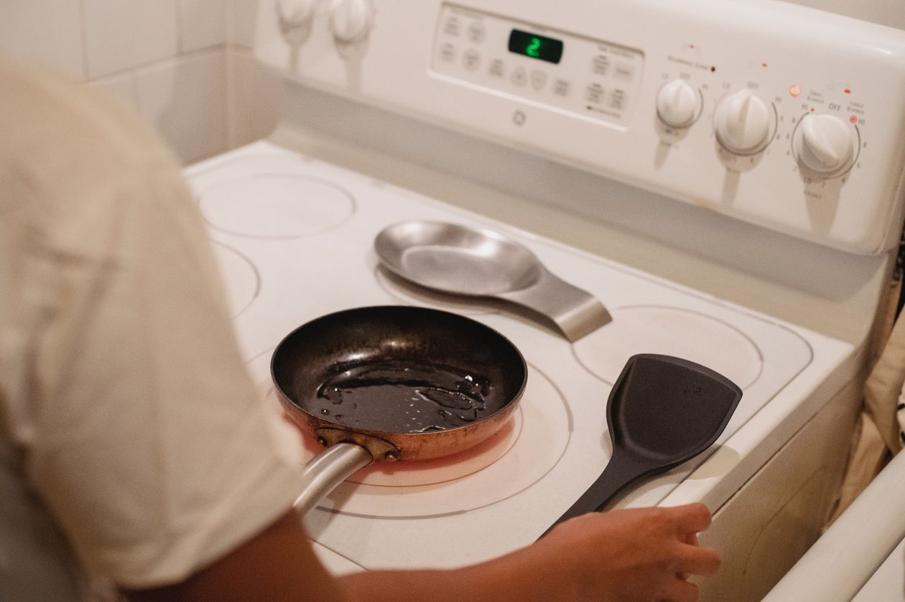

The Cook
Shani, briefly
I learned the fry standing on a stool at my grandmother's stove in Queens, where the rule was that a latke is done when it stops arguing — when the sizzle goes quiet and the edges turn the colour of toast. She graded every batch out loud. I still hear the marks.
After that: six years on the line at a Manhattan deli, most of them on the fry station, where December meant coming home smelling of oil for a month and I understood I didn't mind. In 2019 I started taking Hanukkah orders out of my own kitchen in Crown Heights — twelve dozen the first year, all to neighbours. Last year it was 178 dozen, and the neighbours bring their cousins.
The rest of the year I cook privately, teach the November fry lessons, and test variations I would never serve you unproven. (A beet latke made it to the menu board in 2023 and was voted off by my own family. The board remembers.) What I sell is narrow on purpose: three kinds of latke, fried properly, for the eight nights when latkes are the point.
My one professional opinion, held firmly: most latke failure is not recipe failure. It's water, timid oil, and a paper towel. Fix those three and the recipe you already have works.

House rules
My rules of the fry
Dry is a destination
Grate, salt, wait ten minutes, then wring in a towel until your forearms complain. If the mix weeps in the bowl, it will steam in the pan.
The thermometer decides
190°C, checked, not vibes. Oil that is too cool gets drunk by the latke; oil that is smoking burns the lace before the middle cooks.
Four to a pan, no crowding
A fifth latke drops the temperature and the whole load suffers for it. Patience is an ingredient; I measure it in pan-loads.
Leave them alone
Three minutes a side, one flip, no pressing with the spatula. Pressing squeezes out the middle and glues the latke to the pan's mood.
Hold hot, never covered
Finished latkes wait on a rack in a 100°C oven, uncovered. The moment a lid goes on, the steam you fought all evening wins.
The fine print, in large type
Facts about the kitchen
Kitchen & food
| Kosher status | Kosher-style, not certified. The fry kitchen is meat-free through Hanukkah; if certification matters to your table, ask me and I'll tell you honestly whether I'm the right cook. |
| Allergens | Egg and wheat (matzo meal) in the standard batter. A potato-starch batch for gluten-free orders, fried first, in fresh oil — just say so when you order. |
| Certificate | NYC food protection certificate, current; the kitchen is my home kitchen, arranged for small-batch frying. |
Service & leftovers
| Area | Brooklyn and Manhattan within about 45 minutes. Latkes travel badly past that, and I'd rather tell you than sell you a soft dozen. |
| Reheating | Oven at 220°C, latkes on a rack, 6 minutes. Never the microwave — that's how a good latke goes to be sad. |
| Freezing | They freeze honestly well: cool on the rack, freeze flat, reheat from frozen at 220°C for 9 minutes. |
Three questions I get every year
How far ahead should I order? For nights 1–3, by Sunday, Nov 29 — those nights sell out because everyone has guests on the first weekend. After that, five days ahead is comfortable, and two days is worth asking about.
Can you fry at our hall / office / wedding? Yes — that's the event fry, from $450. I need a working stove or two burners, an hour to set up, and a table near the pans. I bring everything else, including the second cook.
Will you teach my kid / my book club / my team? That's the Fry Lesson, $180 for up to six people. November Sundays book first; a private December date exists if your group is flexible.